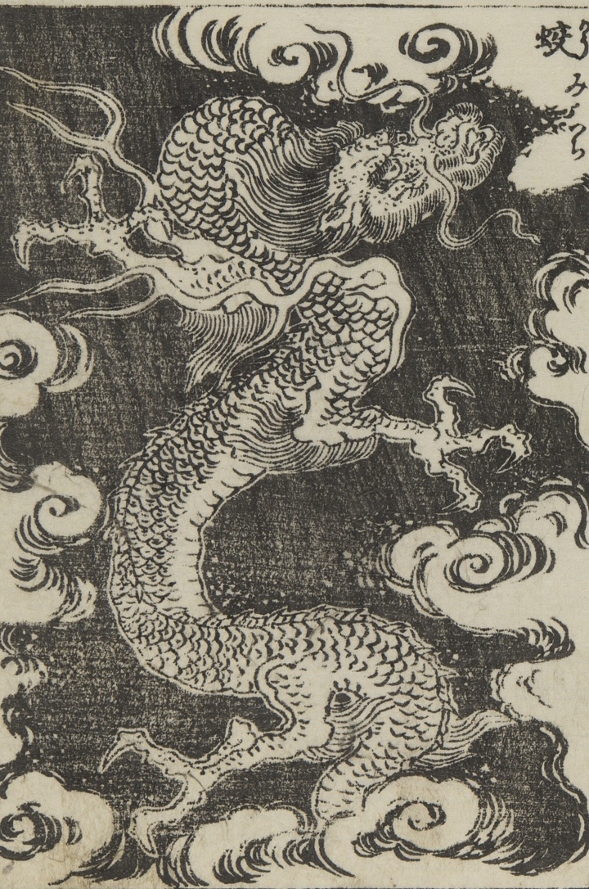

蛟；コウ，龍；リュウ

四足をもち、角がない龍。水中や深山幽谷にすみ、みづち（みずち）ともいう。
著作者：中村惕齋・下河辺拾水／出典：親書誌：U426_nichibunken_0455：頭書増補訓蒙図彙大成；カシラガキゾウホキンモウズイタイセイ／日付：2025／資源識別子：U426_nichibunken_0455_0013_0000
Copyright (c)2010- International Research Center for Japanese Studies, Kyoto, Japan. All rights reserved.